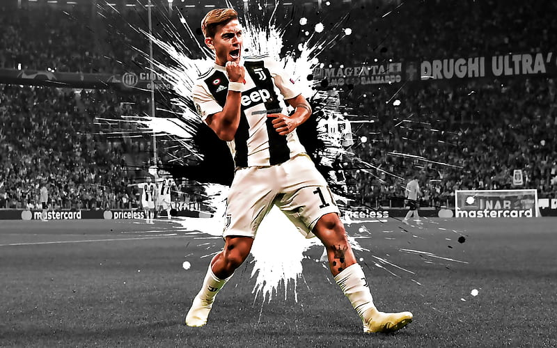
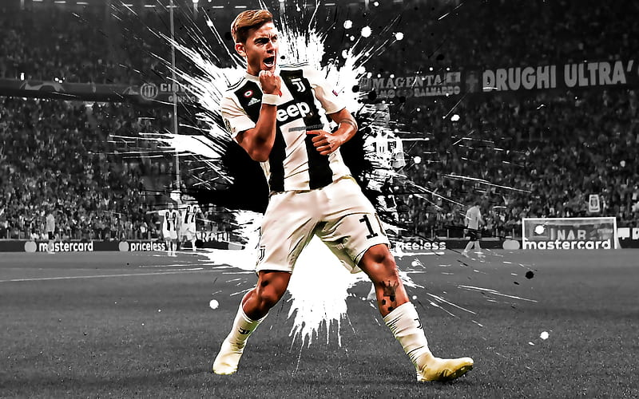

animation::transitions
Excerise 1.1 animation::transitions
We will use CSS3 transitons to animate elements on our page
let's get started
Challenge:
Excerise 1.1 animation::transitions
We will use CSS3 transitons to animate elements on our page
let's get started
Challenge:
